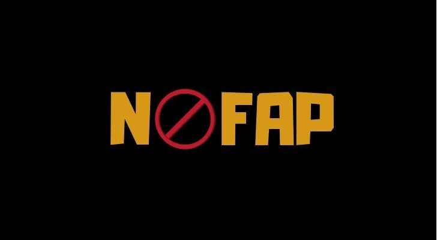

NoFap
NoFap es un movimiento que promueve la abstinencia de la pornografía y la masturbación, bajo la creencia de que esto ayuda a mejorar la energía, el enfoque, la confianza y las relaciones personales. Aunque es una práctica controvertida, los miembros de la comunidad de NoFap afirman que experimentan beneficios en sus vidas personales.

Posibles Beneficios del NoFap
- Mejora del estado de ánimo: La abstinencia de la pornografía y la masturbación puede ayudar a reducir síntomas de ansiedad y a mejorar el bienestar emocional.
- Mayor energía y motivación: Algunas personas reportan tener más energía y motivación para sus actividades diarias.
- Mejoras en las relaciones interpersonales: Los practicantes de NoFap a menudo sienten que tienen una conexión más profunda con sus parejas y experimentan una mayor satisfacción en sus relaciones.
Referencias Bibliográficas
- Fernandez, D. P., & Griffiths, M. D. (2020). Psychosocial impact of excessive pornography consumption on the adolescent population. International Journal of Environmental Research and Public Health, 17(19), 7231.
- Perry, S. L., & Snawder, K. J. (2022). The influence of online pornography and masturbation on relationships and self-esteem. Journal of Sex Research.